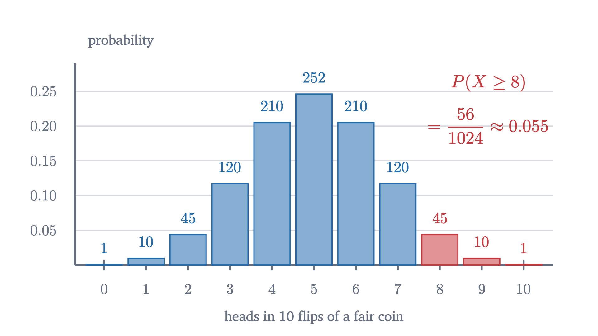
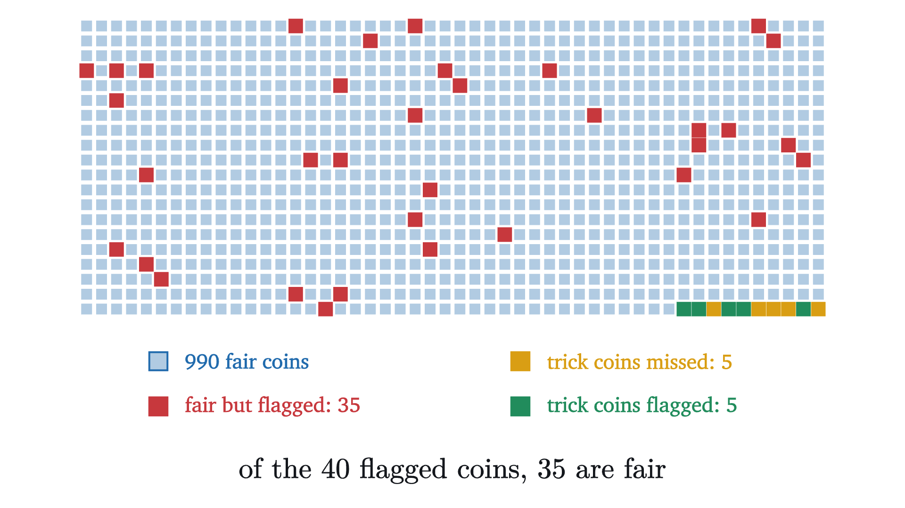
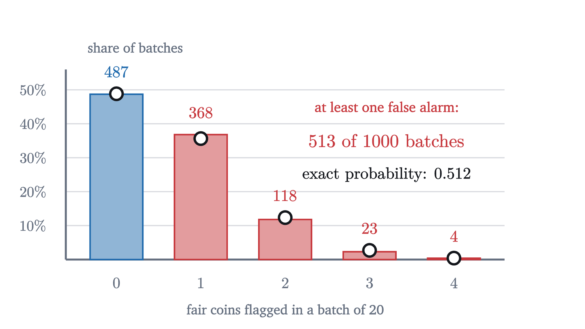

P-values and hypothesis tests without the mysticism
A coin lands heads 60 times in 100. We compute the exact p-value, define the two kinds of error, and show with Bayes' theorem what a p-value is not.
AssumesBinomial distribution: Pascal's triangle and a Galton boardBayes' rule: why a positive test is usually a false alarmWhat a 95% confidence interval does and does not say
You flip a coin 100 times and it lands heads 60 times. Is the coin biased?
Most people say yes at once: a fair coin should give about 50, and 60 is a long way from 50. But a fair coin almost never gives exactly 50 either, so “not what a fair coin should do” cannot be the test. Some gap between the result and 50 is certain. The question that can be answered is how large a gap a fair coin produces by luck alone, and how often. That question has an exact numerical answer, called a p-value. This lesson computes it, and then spends as long on what the number does not mean, because that is where most of the damage is done.
What a fair coin does
The cleanest way to find out what luck alone produces is to take a coin known to be fair and repeat the whole experiment many times. The simulation above does that 400 times. The counts of heads range from 34 to 65. Results like 53 or 46 are ordinary, and 60 is out in the thin part of the pile, though it is not alone there: 20 of the 400 fair-coin experiments landed at least ten away from 50, at 60 or more or at 40 or fewer. That is 5%.
So here is the idea in one sentence. We cannot observe whether the coin is fair, but we can calculate what a fair coin would do, and then see whether our data look like that.
The smallest case, by hand
A simulation gives an estimate. For coins we can do better and compute the probability exactly, and a small case shows how. Suppose the experiment were 10 flips, with 8 heads.
The lesson on the binomial distribution showed that the number of heads $X$ in $n$ independent flips, each landing heads with probability $p$, satisfies
where $\binom{n}{k} = \frac{n!}{k!\,(n-k)!}$ counts the ways to choose which $k$ of the $n$ flips are the heads. For a fair coin every one of the $2^n$ sequences is equally likely, and the formula reduces to $\binom{n}{k}/2^n$.
Pause and try
For 10 flips of a fair coin, find the probability of 8 or more heads. You will need $\binom{10}{8} = 45$, $\binom{10}{9} = 10$ and $\binom{10}{10} = 1$.
Show answerHide answer
There are $2^{10} = 1024$ equally likely sequences. Of these, 45 have exactly 8 heads, 10 have exactly 9, and 1 has 10. So $P(X \ge 8) = \frac{45 + 10 + 1}{1024} = \frac{56}{1024} \approx 0.055$.

Notice what we added up. We observed exactly 8 heads, and we computed the probability of 8 or more. The reason comes next.
Why “at least as extreme”
The natural first idea is to ask how likely our exact result is. For 100 flips,
About 1%, which sounds damning. But try the same calculation for the most ordinary result imaginable: $P(X = 50) \approx 0.0796$. Even a perfect 50-50 split has less than an 8% chance. With 101 possible outcomes, every individual one is improbable, so the smallness of $P(X = 60)$ on its own tells us nothing. With a million flips, every individual count would have probability under 0.001.
What separates 60 from 50 is its position. A count of 50 is in the middle, with half of all outcomes on each side. A count of 60 is far out, with very little beyond it. So we measure how much probability lies at our result and everything further out: all the outcomes that would have surprised us at least as much.
The sum is a finite one, and a computer does it exactly:
We asked whether the coin is biased, without saying in which direction. A result of 40 heads would have been as striking as 60, so outcomes at least as far from 50 on the low side count as “at least as extreme” too. The distribution is symmetric, so they contribute the same amount:
A fair coin produces a result at least as lopsided as ours about once in 18 tries. That is uncommon, and far from impossible. The simulation’s 20 in 400, or 0.05, was a rough estimate of this number. If you have seen this example quoted with a p-value of 0.028, that figure is the right tail alone, and it answers a narrower question that the next section takes up.
The definitions
Each piece of what we did has a standard name.
For the coin, $H_0$ says “each flip is heads with probability $\frac12$, independently”. It pins down the whole distribution in the figure. The test statistic is $T = |X - 50|$, the distance of the count from 50, and we observed $t = 10$. The bar in $P(\,\cdot \mid H_0)$ is read “given”, as in conditional probability: the whole calculation takes place inside a world where the coin is fair. This is the clause that people forget.
Had we suspected in advance that the coin favored heads specifically, the appropriate statistic would be $T = X$, with p-value $P(X \ge 60 \mid H_0) = 0.028$. This is a one-sided test; ours is two-sided. The choice has to be made before seeing the data. Choosing the side after noticing which way the data lean halves the p-value dishonestly.
Making a decision, and the two ways to be wrong
A p-value is a measure of surprise. Sometimes a decision is required: a casino must decide whether to pull a coin from play. The usual procedure fixes a threshold before the experiment.
With the common choice $\alpha = 0.05$, our coin’s $p = 0.057$ is not significant: by this convention, 60 heads in 100 is not enough to call the coin biased.
Pause and try
For 100 flips and $\alpha = 0.05$, which counts of heads lead to rejecting $H_0$? Use these two-sided p-values: 0.089 for 59 heads, 0.057 for 60, 0.035 for 61. Then find the probability that a fair coin gets rejected.
Show answerHide answer
The p-value falls as the count moves away from 50, and 61 is the first count with $p \le 0.05$. So the test rejects at 61 or more heads and, by symmetry, at 39 or fewer. A fair coin lands there with probability equal to the p-value of the boundary case, 0.035. It is below 0.05, not equal to it, because the count jumps in whole numbers.
That answer illustrates a general guarantee, which is the reason for the rule.
For the coin $t^* = 11$ and $p(t^*) = 0.035$. So $\alpha$ caps the rate of type I errors: among fair coins tested this way, at most 5% are wrongly flagged. The theorem says nothing about type II errors, and to compute those we must say how the coin is biased.
Against a coin that lands heads 60% of the time, the rule fails to raise a flag with probability 0.538. The probability of correctly rejecting a false null hypothesis is called the power of the test: here $1 - 0.538 = 0.462$. So if the coin in our opening question really is a 60% coin, a 100-flip experiment had less than an even chance of detecting it. A non-significant result from a test with low power is weak evidence that nothing is going on.
| $H_0$ true | $H_0$ false | |
|---|---|---|
| test rejects $H_0$ | type I error (probability at most $\alpha$) | correct (probability = power) |
| test does not reject | correct | type II error |
What a p-value is not
The misreading that matters most reverses the conditional. Our p-value is $P(\text{data this extreme} \mid \text{coin fair}) = 0.057$. It is very tempting to turn this around and say that the probability the coin is fair, given the data, is 0.057, or that we are “94% sure the coin is biased”.
Those are different conditional probabilities, and Bayes’ theorem says how they are related. For a hypothesis $H$ and data $D$,
The right side contains two things the p-value never looked at: the prior probability $P(H)$ that the hypothesis was true before any data, and the probability of the data under the alternative.
Pause and try
Your coin was drawn at random from a jar of 100 coins. Ninety-nine are fair, and one is a trick coin that lands heads 60% of the time. It then showed exactly 60 heads in 100 flips. Given $P(X = 60 \mid \text{fair}) = 0.0108$ and $P(X = 60 \mid \text{trick}) = 0.0812$, find the probability that your coin is fair.
Show answerHide answer
By Bayes’ theorem,
The data favor the trick coin by a factor of $0.0812/0.0108 \approx 7.5$, but fair coins were 99 times as common to begin with, and $99/7.5 \approx 13$ to 1 still favors fair.
The p-value is 0.057, and the probability that the null hypothesis is true is 0.93. If the jar had held equal numbers of fair and trick coins, the same data would give $P(\text{fair} \mid 60 \text{ heads}) = \frac{0.0108}{0.0108 + 0.0812} \approx 0.12$. The experiment and the p-value are the same for both jars, yet the probability that the coin is fair drops from 0.93 to 0.12, because that probability depends on the prior and the p-value does not.

In the simulation 40 coins were flagged as biased, and 35 of them are fair. Someone who reads “significant at the 5% level” as “95% likely to be a real effect” would be wrong about 88% of the coins in that pile. The test did what the theorem promised: it flagged 35 of 990 fair coins, about 3.5%. The flagged pile is mostly fair coins anyway, because there were so many fair coins to draw false alarms from. This run is close to what the exact rates predict: a flagged coin is fair with probability $\frac{0.99 \times 0.0352}{0.99 \times 0.0352 + 0.01 \times 0.462} \approx 0.88$, where 0.462 is the power against the trick coin.
Many tests, some false alarms
The same arithmetic causes trouble when one researcher runs many tests. Each test of a true null hypothesis has a small chance of a false alarm, and small chances add up.
Pause and try
Twenty fair coins are each flipped 100 times and tested with our rule, which flags a fair coin with probability 0.0352. What is the probability that at least one of the twenty is flagged?
Show answerHide answer
The coins are independent, so the probability that none is flagged is $(1 - 0.0352)^{20} = 0.9648^{20} \approx 0.488$. The probability of at least one false alarm is $1 - 0.488 = 0.512$. It is more likely than not.
This calculation is usually quoted as $1 - 0.95^{20} \approx 0.64$. That version assumes each test has a false-alarm rate of exactly 0.05, which holds when the test statistic is continuous. Our rule can only cut between whole numbers of heads, so its rate is 0.0352, and 0.512 is the correct value for these coins.
A researcher who tests twenty things that do nothing, and reports the one that reached significance, has found nothing. This is the multiple comparisons problem. It arises whenever many hypotheses are tested and the winners are reported without the losers: twenty foods checked against one disease, one drug checked against twenty outcomes, or one data set sliced twenty ways.

The simplest defense is the Bonferroni correction: when running $m$ tests, require $p \le \alpha/m$ for each. Then the chance of any false alarm at all is at most $m \times \alpha/m = \alpha$, because the probability that at least one of several events happens is never more than the sum of their probabilities. One of the problems below works through this.
Worked examples
Where the reasoning stops
A p-value above $\alpha$ does not show that $H_0$ is true. A coin with a 60% chance of heads, flipped 10 times, gives 6 heads as its single most likely result, and the two-sided p-value of 6 heads in 10 is $P(|X - 5| \ge 1) = 1 - \frac{252}{1024} \approx 0.75$. That is nowhere near significant, and the coin is biased. The experiment was too small to tell.
The calculation also inherits every assumption in $H_0$. Our null hypothesis said the flips were independent with probability $\frac12$ each. If the flipper’s technique makes consecutive flips tend to agree, a perfectly balanced coin produces lopsided counts more often than the binomial distribution allows, and a small p-value would be evidence against “independent and fair” as a package, not against the coin’s balance.
Stepping back
The logic of a hypothesis test is an argument by near-contradiction. Assume the dull explanation, work out what it predicts, and see whether the data fall in a region the dull explanation almost never reaches. The hard part was choosing what to compute: the probability of the exact outcome is useless, and the tail of outcomes at least as extreme is what carries the information.
Everything delicate about p-values follows from the direction of the conditional. We compute the probability of data given a hypothesis, and what we want is the probability of the hypothesis given data. The first can be calculated from the null hypothesis alone, which is why it is so widely used. The second needs to know how plausible the hypothesis was beforehand. So far every test and interval in this series has concerned one variable at a time, and the next lesson turns to the relationship between two.
Check yourself
A drug trial reports that patients on the drug recovered faster than patients on a placebo, with $p = 0.02$. What does this mean?
Problems
The first three compute p-values. The next four are about errors, priors and many tests. The last is a challenge.
Problem 1
A coin is flipped 10 times and lands heads 9 times. Find the one-sided and the two-sided p-value for the null hypothesis that the coin is fair.
Show solutionHide solution
There are 1024 equally likely sequences. One-sided: $P(X \ge 9) = \frac{\binom{10}{9} + \binom{10}{10}}{1024} = \frac{11}{1024} \approx 0.0107$. Two-sided: outcomes at least as far from 5 as 9 are $X \ge 9$ and $X \le 1$, and by symmetry $P(|X - 5| \ge 4) = \frac{22}{1024} \approx 0.0215$.
Problem 2
A fair-coin test uses 12 flips and rejects $H_0$ when the number of heads is 0, 1, 2, 10, 11 or 12. Find its type I error rate.
Show solutionHide solution
Under $H_0$ each of the $2^{12} = 4096$ sequences is equally likely. The numbers of sequences with 0, 1 and 2 heads are $\binom{12}{0} = 1$, $\binom{12}{1} = 12$ and $\binom{12}{2} = 66$, in total 79, and by symmetry there are 79 with 10, 11 or 12 heads. The type I error rate is $\frac{158}{4096} \approx 0.0386$.
Problem 3
A coin is flipped 400 times and lands heads 230 times. Use the normal approximation with the continuity correction to find the two-sided p-value. (A standard normal variable exceeds 2.95 in absolute value with probability 0.0032.)
Show solutionHide solution
Under $H_0$ the count has mean 200 and standard deviation $\sqrt{400 \times 0.25} = 10$. The tail “230 or more” begins at 229.5, so $z = (229.5 - 200)/10 = 2.95$. The two-sided p-value is about 0.0032, strong evidence against a fair coin. Note that 230 of 400 is 57.5% heads, a smaller departure from one half than 60 of 100. It is more significant because there are four times as many flips, which halves the standard error of the proportion.
Problem 4
A test of fairness uses 10 flips and rejects when the number of heads is 0, 1, 9 or 10. (a) Find its type I error rate. (b) If the coin actually lands heads 70% of the time, find the power and the type II error rate. Use $0.7^{10} \approx 0.0282$ and $0.7^9 \approx 0.0404$.
Show solutionHide solution
(a) $\frac{1 + 10 + 10 + 1}{1024} = \frac{22}{1024} \approx 0.0215$. (b) With $p = 0.7$: $P(X = 10) = 0.7^{10} \approx 0.0282$ and $P(X = 9) = 10 \times 0.7^9 \times 0.3 \approx 0.1211$. At the other end, $P(X = 0) = 0.3^{10}$ and $P(X = 1) = 10 \times 0.7 \times 0.3^9$ together are about 0.0001. The power is about $0.0282 + 0.1211 + 0.0001 = 0.149$, and the type II error rate is about 0.851. Ten flips will miss a 70% coin about 85% of the time.
Problem 5
A laboratory screens many candidate drugs. Suppose 10% of the candidates really work. Each is tested at $\alpha = 0.05$ with power 0.8. Of the candidates that reach significance, what fraction do not work?
Show solutionHide solution
Take 1000 candidates. 100 work, and $0.8 \times 100 = 80$ of them reach significance. 900 do not work, and $0.05 \times 900 = 45$ of them reach significance anyway. So 125 results are significant, of which 45 are false: $\frac{45}{125} = 0.36$. In Bayes’ form, $P(H_0 \mid \text{significant}) = \frac{0.05 \times 0.9}{0.05 \times 0.9 + 0.8 \times 0.1} = 0.36$. More than a third of the “discoveries” are false, although each test had only a 5% type I error rate.
Problem 6
A study tests 14 independent null hypotheses, all of them true, each at level 0.05. (a) Find the probability of at least one significant result. (b) Let $A_1, \dots, A_m$ be events. Explain why $P(\text{at least one } A_i \text{ occurs}) \le P(A_1) + \dots + P(A_m)$, and deduce that testing each of $m$ true null hypotheses at level $\alpha/m$ keeps the probability of any false alarm at most $\alpha$. (c) Compute that probability exactly for $m = 14$ and $\alpha = 0.05$.
Show solutionHide solution
(a) $1 - 0.95^{14} \approx 1 - 0.488 = 0.512$. (b) The probability of “at least one” is the total probability of the outcomes that lie in one or more of the $A_i$. The sum $P(A_1) + \dots + P(A_m)$ counts every such outcome at least once, and counts outcomes lying in several events more than once, so it is at least as large. With $A_i$ the event that test $i$ gives a false alarm, each $P(A_i) \le \alpha/m$ by the lesson’s theorem, so the probability of any false alarm is at most $m \times \alpha/m = \alpha$. This argument does not need independence. (c) Each test uses level $0.05/14 \approx 0.00357$, and for independent tests $1 - (1 - 0.00357)^{14} \approx 0.0489$, just under 0.05.
Problem 7
Let $\bar x$ be the mean of a sample from a normal population with known standard error $\operatorname{SE}$. To test $H_0\colon \mu = \mu_0$, use $T = |\bar X - \mu_0|/\operatorname{SE}$, and reject at level 0.05 when $T \ge 1.96$. Show that the test rejects $H_0$ exactly when $\mu_0$ lies outside the 95% confidence interval $\bar x \pm 1.96\operatorname{SE}$. What does this say about the values inside a confidence interval?
Show solutionHide solution
Under $H_0$, $(\bar X - \mu_0)/\operatorname{SE}$ is standard normal, so $P(T \ge 1.96 \mid H_0) = 0.05$, and the p-value is at most 0.05 exactly when the observed $T$ is at least 1.96. Now $T \ge 1.96$ means $|\bar x - \mu_0| \ge 1.96\operatorname{SE}$, which says $\mu_0$ is at least $1.96\operatorname{SE}$ away from $\bar x$: that is, $\mu_0 \le \bar x - 1.96\operatorname{SE}$ or $\mu_0 \ge \bar x + 1.96\operatorname{SE}$. So the test rejects exactly when $\mu_0$ is outside the interval (or on its boundary). The 95% confidence interval is therefore the set of all values $\mu_0$ that a two-sided test at level 0.05 would not reject: the values of the mean with which the data are compatible.
Problem 8
(Peeking.) A researcher tests whether a coin favors heads. She flips 5 times and declares success if all 5 are heads. If not, she flips 5 more and declares success if the 10 flips contain at least 9 heads. (a) Find the type I error rate of each of the two tests taken alone. (b) Find the probability that a fair coin leads her to declare success. (c) What goes wrong if she reports only the test that succeeded?
Show solutionHide solution
(a) All 5 heads has probability $\frac{1}{32} = \frac{32}{1024} \approx 0.031$. At least 9 heads in 10 has probability $\frac{11}{1024} \approx 0.011$.
(b) She succeeds at the first look with probability $\frac{32}{1024}$. She succeeds at the second look only if the first five were not all heads and the ten flips contain at least 9 heads. Ten heads would require the first five to be all heads, so the total must be exactly 9, with the single tail among the first five flips. There are 5 such sequences out of 1024. The two ways of succeeding cannot both happen, so the probability is $\frac{32 + 5}{1024} = \frac{37}{1024} \approx 0.036$.
(c) The procedure as a whole has type I error rate 0.036, larger than that of either test alone. If she succeeds at the second look and reports “9 heads in 10, $p = 0.011$”, the reported p-value understates how often a fair coin would have given her a success somewhere along the way. Looking at the data repeatedly and stopping when it looks good is another form of multiple comparisons. An honest p-value must be computed for the whole procedure that was followed.